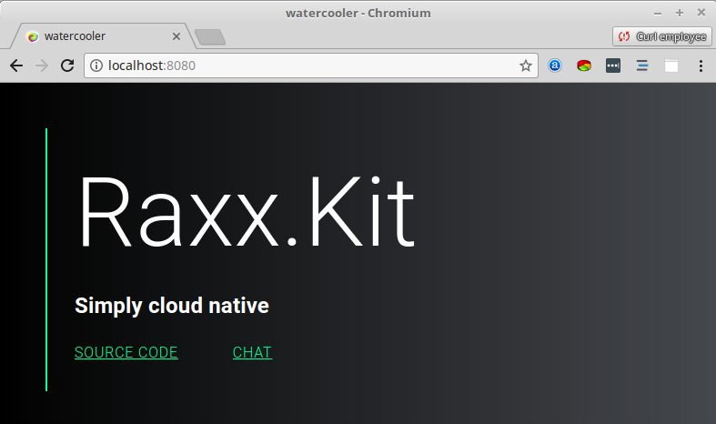
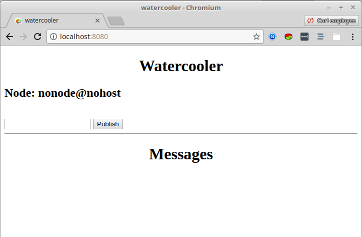

A distributed chatroom with Raxx.Kit
Raxx.Kit is a project generator to start developing web applications with Raxx and Elixir. Raxx is a toolkit focused on building the web layer for all kinds of Elixir application.
Why not Phoenix?
Raxx is a lightweight alternative when compared to the more comprehensive and opinionated Phoenix framework. Therefore it is a good fit for simple web service. It can also be a good choice when an application does not fit with the conventions chosen by Phoenix.
In conjuction with other excellent tools in the Elixir (and erlang) ecosystem Raxx is still a powerful choice. I will demonstrate this by showing how easy it is to build a multi-node chat application.
This tutorial was made with raxx_kit 0.5.1Starting a project
$ mix archive.install hex raxx_kit
$ mix raxx.kit watercooler
...
...
Get started:
cd watercooler
iex -S mix
View on http://localhost:8080
View on https://localhost:8443 (uses a self signed certificate)
Follow the instructions printed by the generator to start the project. Visit the home page at http://localhost:8080 and the following should be visible.

Updating the home page
The Watercooler.WWW.HomePage module renders the homepage.
Below is this module as generated by Raxx.Kit.
# lib/watercooler/www/home_page.ex
defmodule Watercooler.WWW.HomePage do
use Raxx.Server
use Watercooler.WWW.HTMLView
@impl Raxx.Server
def handle_request(_request, _state) do
response(:ok)
|> render(%{})
end
end
Update the map passed to render, to include the current node name.
|> render(%{node: Node.self()})
Replace the home page template for the watercooler home page.
<!-- lib/watercooler/www/home_page.html.eex -->
<main>
<h1>Watercooler</h1>
<h2>Node: <%= @node %></h2>
<iframe name="myframe" width="0" height="0"></iframe>
<form action="/publish" method="post" target="myframe">
<input type="text" name="message">
<button type="submit">Publish</button>
</form>
<hr>
<h1>Messages</h1>
<ul id="messages"></ul>
</main>
Finally replace the stylesheet with something for the home page.
/* lib/watercooler/public/main.css */
main {
max-width: 720px;
margin-left: auto;
margin-right: auto;
}
h1 {
text-align: center;
}
iframe {
border: none;
}
Refresh the home page to see the chatroom interface.

The chatroom
There is no chatroom module bundled as part of Raxx because it has nothing to do with the web. However there are tools that come with Elixir that do the job very well. The chatroom for this project we will build using pg2.
pg2 is part of the erlang ecosystem and it's documentation is in erlang.
Fortunetly we do not need to know much about pg2 to be able to create a chatroom.
# lib/watercooler.ex
defmodule Watercooler do
@group :watercooler
def publish(message) do
:ok = :pg2.create(@group)
for client <- :pg2.get_members(@group) do
send(client, {@group, message})
end
{:ok, message}
end
def join() do
:ok = :pg2.create(@group)
:ok = :pg2.join(@group, self())
{:ok, @group}
end
end
It is good practise to separate the business logic from anything dealing with the web.
One reason is that publish and join can be reused.
Publishing a message
Now there is a chatroom users need to be able to access it over the web.
# lib/watercooler/www/publish.ex
defmodule Watercooler.WWW.Publish do
use Raxx.Server
@impl Raxx.Server
def handle_request(request, _state) do
%{"message" => message} =
request.body # 1.
|> URI.decode_www_form()
|> URI.decode_query()
{:ok, _} = Watercooler.publish(message) # 2.
redirect("/") # 3.
end
end
In response to a request the following action is taken.
- Decode the body of the request and extract the message to be sent.
- Publish the message using the interface to the business logic defined before.
- Reponse by redirecting the client back to the home page.
All that remains is for this action to be added to the router.
# lib/watercooler/www.ex
defmodule Watercooler.WWW do
use Ace.HTTP.Service
use Raxx.Router, [
{%{method: :GET, path: []}, Watercooler.WWW.HomePage},
{%{method: :POST, path: ["publish"]}, Watercooler.WWW.Publish},
{_, Watercooler.WWW.NotFoundPage}
]
use Raxx.Static, "./public"
use Raxx.Logger
end
Sending messages
We will use server sent events to notify clients when someone publishes a message to the chatroom. These are a standard that allow notification to be sent to a client from the server. We use this standard as it is supported by most browsers and has a nice JavaScript API.
# mix.exs
defp deps do
[
{:server_sent_event, "~> 0.3.1"},
...
Remember to run mix deps.get
Clients are now able to post messages but there is no way for them see what anyone else publishes.
# lib/watercooler/www/listen.ex
defmodule Watercooler.WWW.Listen do
use Raxx.Server
alias ServerSentEvent, as: SSE
@impl Raxx.Server
def handle_request(_request, state) do
{:ok, _} = Watercooler.join() # 1.
response = response(:ok)
|> set_header("content-type", SSE.mime_type())
|> set_body(true) # 2.
{[response], state} # 3.
end
@impl Raxx.Server
def handle_info({:watercooler, message}, state) do
event = SSE.serialize(message)
{[Raxx.data(event)], state} # 4.
end
end
- Join the chat room, this process will now receive messages for every publish event.
- Create a response with a body of unknown length
- Return the request so far and updated server state (in this example unchanged).
- For every message from the chat room serialize it and send to the client. Again we return the same sever state
Remember to add the action to the router, the JavaScript coming up assumes the endpoint is /listen.
Listening in the browser
All that the code required in the browser are these few lines.
// lib/watercooler/assets/main.js
var $message = document.getElementById('messages') // 1.
displayUpdate = function (update) { // 2.
var line = "<li>" + update.data +"</li>"
$message.innerHTML = line + $message.innerHTML
}
var source = new EventSource('/listen'); // 3.
source.onmessage = displayUpdate // 4.
- Get a reference to the element in the browser where we will show messages.
- Define a function to display posts on the page
- Start a new connection to the endpoint which sends messages.
- For every message from the server call the function to show update on the page.
Now we can open several tabs and send messages between them. However at this point only one node is running and the title says multi-node.
Starting multiple nodes
When starting multiple nodes each one needs a name and a way to find other nodes.
To tell each node what others to look for create a sys.config with the following content.
%% sys.config
[{kernel,
[
{sync_nodes_optional,
[
'node1@127.0.0.1',
'node2@127.0.0.1'
]},
{sync_nodes_timeout, 5000}
]}
].
This is an erlang file because it's contents are passed to the erlang VM at startup.
Now start two nodes, telling each one to use sys.config and it's own name.
# terminal 1
$ PORT=8081 SECURE_PORT=8441 iex \
--name node1@127.0.0.1 \
--erl "-config sys.config" \
-S mix
# terminal 2
$ PORT=8082 SECURE_PORT=8442 iex \
--name node2@127.0.0.1 \
--erl "-config sys.config" \
-S mix
Opening browser windows to localhost:8081 and localhost:8082 and publish a message will appear in both windows.
Next
Interested in using Raxx the best place to get started is the README. Any questions, ask on the Elixir Forum or chat in the #raxx slack channel.